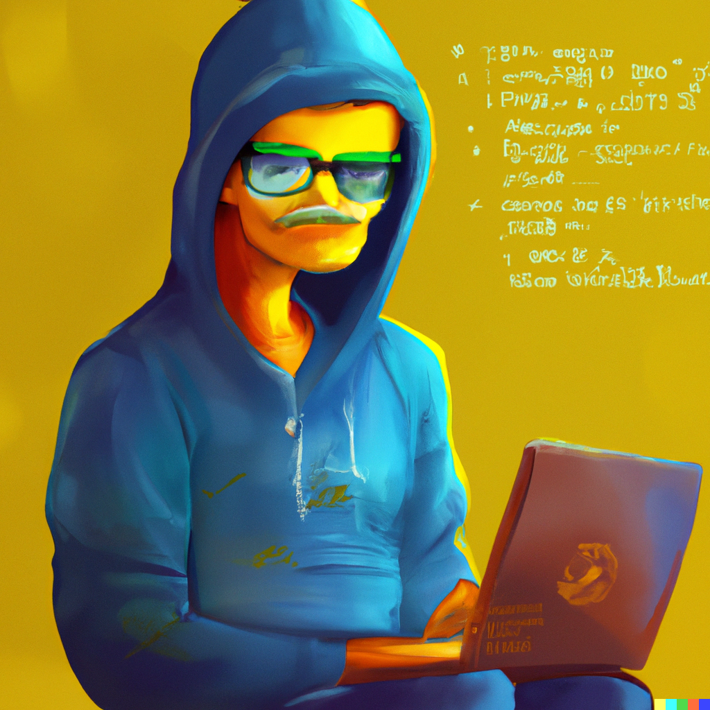

Software engineering techniques that non-programmers who write a lot of code can benefit from — the DRY WIT approach

Data scientists, statisticians, analysts, researchers, and many other professionals write a lot of code.
Not only do they write a lot of code, but they must also read and review a lot of code as well. They either work in teams and need to review each other’s code, or need to be able to reproduce results from past projects, be it for peer review or auditing purposes. And yet, they never, or very rarely, get taught the tools and techniques that would make the process of writing, collaborating, reviewing and reproducing projects possible.
Which is truly unfortunate because software engineers face the same challenges and solved them decades ago. Software engineers developed a set of project management techniques and tools that non-programmers who write a lot of code could benefit from as well.
These tools and techniques can be used right from the start of a project at a minimal cost, such that the analysis is well-tested, well-documented, trustworthy and reproducible by design. Projects are going to be reproducible simply because they were engineered, from the start, to be reproducible.
But all these tools, frameworks and techniques boil down to two acronyms that I like to keep in my head at all times:
- DRY: Don’t Repeat Yourself;
- WIT: Write IT down.
DRY WIT: by systematically avoiding not to repeat yourself and by writing everything down, projects become well-tested, well-documented, trustworthy and reproducible by design. Why is that?
DRY: Don’t Repeat Yourself
Let’s start with DRY: what does it mean not having to repeat oneself? It means:
- using functions instead of copy-and-pasting bits of code here and there;
- using literate programming, to avoid having to copy and paste graphs and tables into word or pdf documents;
- treating code as data and making use of templating.
The most widely used programming languages for data science/statistics, Python and R, both have first-class functions. This means that functions can be manipulated like any other object. So something like:
Reduce(`+`, seq(1:100))## [1] 5050
where the function +() gets used as an argument of the higher-order Reduce() function is absolutely valid (and so is Python’s equivalent reduce from functools) and avoids having to use a for-loop which can lead to other issues. Generally speaking, the functional programming paradigm lends itself very naturally to data analysis tasks, and in my opinion data scientists and statisticians would benefit a lot from adopting this paradigm.
Literate programming is another tool that needs to be in the toolbox of any person analysing data. This is because at the end of the day, the results of an analysis need to be in some form of document. Without literate programming, this is how you would draft reports:

But with literate programming, this is how this loop would look like:

Quarto is the latest open-source scientific and technical publishing system that leverages Pandoc and supports R, Python, Julia and ObservableJs right out of the box.
Below is a little Quarto Hello World:
---
output: pdf
---
In this example we embed parts of the examples from the
\texttt{kruskal.test} help page into a LaTeX document:
::: {.cell}
```{.r .cell-code}
data (airquality)
kruskal.test(Ozone ~ Month, data = airquality)
```
::: {.cell-output .cell-output-stdout}
```
Kruskal-Wallis rank sum test
data: Ozone by Month
Kruskal-Wallis chi-squared = 29.267, df = 4, p-value = 6.901e-06
```
:::
:::
which shows that the location parameter of the Ozone
distribution varies significantly from month to month.
Finally we include a boxplot of the data:
::: {.cell}
::: {.cell-output-display}
{width=672}
:::
:::
Compiling this document results in the following:

Of course, you could use Python code chunks instead of R, you could also compile this document to Word, or HTML, or anything else really. By combining code and prose, the process of data analysis gets streamlined and we don’t need to repeat ourselves copy and pasting images and tables into Word documents.
Finally, treating code as data is also quite useful. This means that it is possible to compute on the language itself. This is a more advanced topic, but definitely worth the effort. As an illustration, consider the following R toy example:
show_and_eval <- function(f, ...){
f <- deparse(substitute(f))
dots <- list(...)
message("Evaluating: ", f, "() with arguments: ", deparse(dots))
do.call(f, dots)
}Running this function does the following:
show_and_eval(sqrt, 2)## Evaluating: sqrt() with arguments: list(2)## [1] 1.414214show_and_eval(mean, x = c(NA, 1, 2))## Evaluating: mean() with arguments: list(x = c(NA, 1, 2))## [1] NAshow_and_eval(mean, x = c(NA, 1, 2), na.rm = TRUE)## Evaluating: mean() with arguments: list(x = c(NA, 1, 2), na.rm = TRUE)## [1] 1.5This is incredibly useful when writing packages (to know more about these techniques in the R programming language, read the chapter Metaprogramming from Advanced R).
WIT: Write IT down
Now on the WIT bit: write it down. You’ve just written a function. To see if it works correctly, you test it in the interactive console. You execute the test, see that it works, and move on. But wait! What you just did is called a unit test. Instead of writing that in the console and then never use it ever again, write it down in a script. Now you’ve got a unit test for that function that you can execute each time you update that function’s code, and make sure that it keeps working as expected. There are many unit testing frameworks that can help you how to write unit tests consistently and run them automatically.
Documentation: write it down! How does the function work? What are its inputs? Its outputs? What else should the user know to make it work? Very often, documentation is but a series of comments in your scripts. That’s already nice, but using literate programming, you could also turn these comments into proper documentation. You could use docstrings in Python or {roxygen2} style comments in R.
Another classic: you correct some data manually in the raw dataset (very often a .csv or .xlsx file). For example, when dealing with data on people, sex is sometimes “M” or “F”, sometimes “Male” or “Female”, sometimes “1” or “0”. You spot a couple of inconsistencies and decide to quickly correct them by hand. Maybe only 3 men were coded as “Male” so you simply erase the “ale” and go on with your project. Stop!
Write IT down!
Write a couple of lines of code that does the replacement for you. Not only will this leave a trace, it will ensure that when you get an update to that data in the future you don’t have to remember to have to change it by hand.
You should aim at completely eliminating any required manual intervention when building your project. A project that can be fully run by a machine is easier to debug, its execution can be scheduled and can be iterated over very quickly.
Something else that you should write down, or rather, let another tool do it for you: how you collaborate with your teammates. For this, you should be using Git. Who changed what part of what function when? If the project’s code is versioned, Git writes it down for you. You want to experiment with a new feature? Write it down by creating a new branch and going nuts. There’s something wrong in the code? Write it down as an issue on your versioning platform (usually Github).
There are many more topics that us disciplines of the data could learn from software engineers. I’m currently working on a free ebook that you can read here that teaches these techniques. If this post opened your appetite, give the book a go!